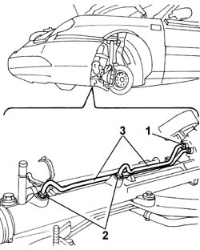

4130A32 CONNECTORS and rigid pipes for power assisted steering box
- Path
- Procedures > 41 STEERING > 4130 POWER ASSISTED STEERING > 4130A POWER STEERING BOX > 4130A32 CONNECTORS and rigid pipes for power assisted steering box
- Kind
- repair procedure (removal / refitting; the operation number is the code)
- Applies to
- all engines; all production periods
- Interactive page
- https://sloeber94.github.io/elrnDB-lThss/en/#/173171
Applies to: engines: 3.0 V6, 3.2 V6; all production periods
 Removing
Removing
 Refitting
Refitting- Position the vehicle on a lift.
See in Op. 4410D10 Front suspension FRAME - R.R.
- Proceed with removing the front suspension frame without dismantling the chassis components at the bench;
1. With the front suspension frame at the bench, undo the connectors for the rigid pipes on the power assisted steering box, universal joint mounting side.
2. Undo the connectors for the rigid pipes on the box located in the centre of the actual box.
3. Remove the rigid pipes for the power assisted steering box.

Applies to: engines: 3.0 V6, 3.2 V6; all production periods
Refitting
Removing- Fit the rigid pipes and fasten them to the power assisted steering box on the universal joint side and at the centre of the actual box.
See in Op. 4410D10 Front suspension FRAME - R.R.
- Proceed with refitting the front suspension frame;
- Remove the vehicle from the lift.
Applies to: engines: 2.0 TB, 2.4 20V, 2.4 JTD 10V, 2.4 JTD 20V; all production periods
Removing
Refitting- Position the vehicle on a lift.
See in Op. 7055B54 PROTECTION/GUARD under engine - R.R.
1. Undo the connectors for the rigid pipes on the power assisted steering box, universal joint mounting side.
2. Undo the connectors for the rigid pipes on the box located in the centre of the actual box.
3. Remove the rigid pipes for the power assisted steering box.
Applies to: engines: 2.0 TB, 2.4 20V, 2.4 JTD 10V, 2.4 JTD 20V; all production periods
Refitting
Removing- Fit the rigid pipes and fasten them to the power assisted steering box on the universal joint side and at the centre of the actual box.
- Top up the power assisted steering system using the appropriate fluid.
 | Description | Qty. | Component | Type | Classification |
|---|---|---|---|---|---|
. | TUTELA HP 20 | - | - | Oil | Circuito servosterzo |
See in Op. 7055B54 PROTECTION/GUARD under engine - R.R.
- Remove the vehicle from the lift.